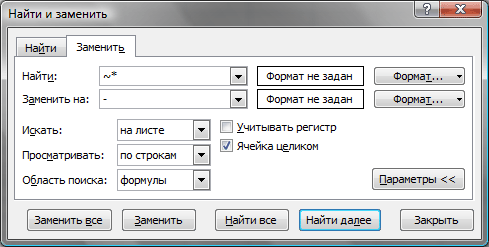
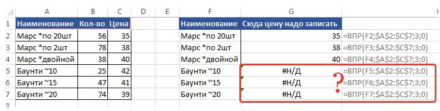
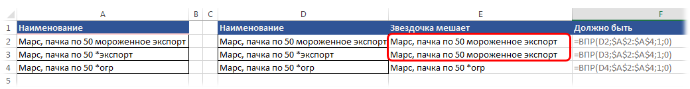

Как заменить/удалить/найти звездочку?
Наверное кто-то уже сталкивался с подобной ситуацией - на листе в ячейках записаны слова/предложения, в которых имеется знак - * - звездочка. Иногда его нужно либо найти, либо заменить на другой символ, либо просто удалить. Например, строку вида "496*120*45" надо преобразовать в такой: "496x120x45". И вот тут как раз возникает проблема: символ звездочки(как и знак вопроса) является служебным символом - он заменяет собой группу любых символов(а знак вопроса - один любой символ). И при попытке заменить только звездочку Excel заменят ВСЕ данные в ячейке. Сейчас пока разговор про стандартную замену - (Excel 2003: Правка -Заменить; Excel 2007-2010: вкладка Главная -Найти и выделить -Заменить) - Ctrl+H. Неужели ничего нельзя сделать? Можно. Разработчики предусмотрели такой вариант. Просто перед служебным символом необходимо поставить другой служебный знак, который сообщает Excel, что следующий за ним символ не выполняет свои служебные функции, а выступает в роли обычного символа. Знак этот называется Тильда. Вот такой - ~. На обычной клавиатуре этот знак обычно расположен на кнопке вместе с буквой Ё.
Таким образом в поле Найти поискового окошка должен получиться такой текст - "~*"(в поле Заменить на указывается символ/ы, которым требуется заменить звездочку. Если звездочку надо удалить - поле оставляем пустым). И не стоит забывать про дополнительные параметры замены(они раскрываются при нажатии кнопки "Параметры" поискового окна). А именно - необходимо поставить/снять галочку у параметра Ячейка целиком. В рассматриваемом случае эту галочку необходимо снять.

Если же надо найти саму Тильду, то тут все также - просто указываете две тильды: ~~
По тому же принципу этот символ используется и в формулах, которые работают с служебными символами (ВПР, СЧЁТЕСЛИ, СУММЕЛИ и т.п.)
Но. Всегда есть но. Некоторые формулы любые символы воспринимают как текст сразу и для них нет такого понятия, как служебный символ. К ним относится функция НАЙТИ. В данной функции для поиска данного символа не надо ставить перед ним еще один, потому как она не воспринимает символы подстановки как таковые. Она абсолютно любой символ принимает как текст и ищет строго то, что указано:
=НАЙТИ("~"; A1)
=НАЙТИ("*"; A1)
=НАЙТИ("?"; A1)
=FIND("~", A1)
=FIND("*", A1)
=FIND("?", A1)
Есть аналогичная ей функция - ПОИСК. В этой функции обязательно применять тот же принцип, что и во всех вышеперечисленных - т.е. явно указывать Excel, что мы ищем спец.символ:
=ПОИСК("~~"; A1)
=ПОИСК("~*"; A1)
=ПОИСК("~?"; A1)
=SEARCH("~~", A1)
=SEARCH("~*", A1)
=SEARCH("~?", A1)
И к слову сказать, символы звездочки и вопр.знака так же используются формулами ВПР(VLOOKUP), ГПР(HLOOKUP) и ПОИСКПОЗ(MATCH). При этом самый неприятный момент здесь заключается в том, что звездочка, вопросительный знак или сама тильда могут быть внутри текста в искомом массиве данных:

и как видно в этом случае данные с тильдой не могут быть найдены. Чтобы найти их через ВПР(и прочие схожие функции) необходимо заменить тильду на две. Я бы советовал делать это так(на примере формул из таблицы выше):
=ВПР(ПОДСТАВИТЬ(F2;"~";"~~");$A$2:$C$7;3;0)
=VLOOKUP(SUBSTITUTE(F2,"~","~~"),$A$2:$C$7,3,0)
И хоть данные со звездочкой и вопр.знаком в большинстве случаев мешать не будут, можно попасть на ситуацию, когда тексту со звездочкой будет сопоставлен неверный результат:

почему ВПР так поступает лучше прочитать здесь: Как найти значение в другой таблице или сила ВПР. А в этой статье я лишь приведу формулу, как избежать таких проблем. Так же как и с тильдой используем функцию ПОДСТАВИТЬ(SUBSTITUTE), но теперь подставляем тильду к звездочке:
=ВПР(ПОДСТАВИТЬ(D2;"*";"~*");$A$2:$A$4;1;0)
=VLOOKUP(SUBSTITUTE(D2,"*","~*"),$A$2:$A$4,1,0)